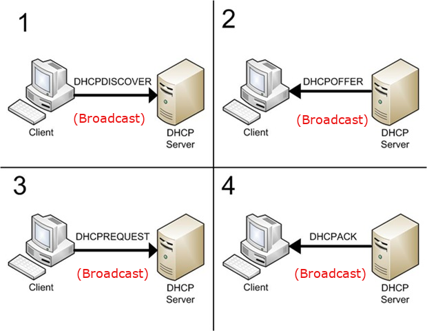

3.1. Funcionamiento del protocolo
DHCP (Dynamic Host Configuration Protocol) es un protocolo de red Cliente/Servidor que permite a los clientes de una red IP obtener sus parámetros de configuración automáticamente. El intercambio de paquetes que se produce es el siguiente (con un programas como Wireshark podrías capturarlo y analizarlo):
{kind=link}
- VENTAJAS
Facilita el mantenimiento de la red.
Inclusión de nuevos equipos con facilidad.
Cambios en la red simples.
- INCONVENIENTES
Falta de seguridad en el acceso a la red.
Servicio candidato a ataques.
Saturación de la red (muchos paquetes de difusión/broadcast).
En el siguiente video puedes ver una explicación visual y muy práctica del funcionamiento de este protocolo:
3.2. Parámetros de configuración
Además de proporcionar una dirección IP, el servicio DHCP puede asignar valores a los siguientes parámetros de red (tanto para IPv4 como para IPv6):
Dirección IP
Máscara de subred
Dirección del servidor/es DNS
Dir. IP Puerta de enlace.
Broadcast address
Más parámetros en el siguiente enlace.